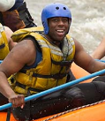

Our purpose with White Water Rafting is still being decided! We have had several lawsuits that have caused us catastrophic financial debt, ruining anyone who has ties to this company! Somehow this debt has also found the people who come to this attraction as well. We have no idea how this is happening! Sometimes we wonder if our regretful tears from our devestation of financially ruining all families and individuals who come here, have become the very liquid which sustains this river and by which this cursed river flows. If you are reading this, this is a cry for help.